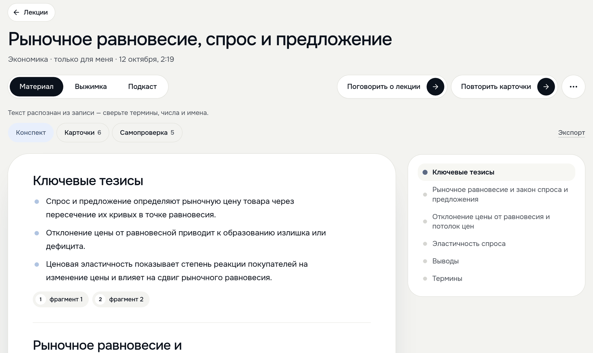
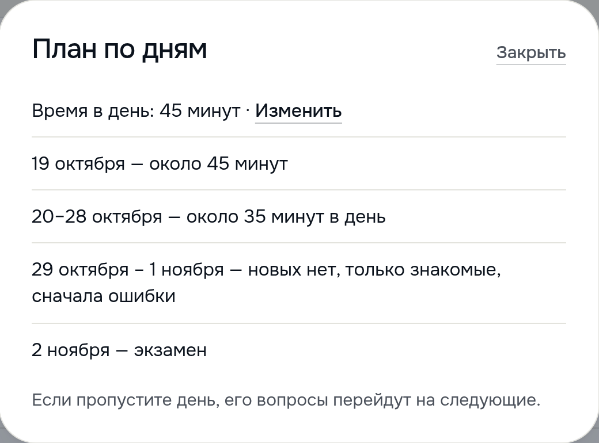

Содержание
В Meldy четыре части.
Две для студента и две для преподавателя
Две для студента и две для преподавателя

Лекции
слайды 7–8
Файл, фото, текст, ссылка
или запись до 15 МБ
или запись до 15 МБ
Конспект, карточки, тест,
выжимка, подкаст,
разговор о лекции
выжимка, подкаст,
разговор о лекции

Экзамены
слайды 9–10
До 2000 вопросов кафедры
из Word, Excel, TXT или PDF
из Word, Excel, TXT или PDF
План по дням, ответ вслух,
экзамен для группы
и бот в Telegram
экзамен для группы
и бот в Telegram

Конструктор
слайд 11
8 видов блоков
и 4 типа вопросов
и 4 типа вопросов
Свои картинки,
видео и оформление
видео и оформление

Контрольные
слайд 12
Тест по ссылке
без аккаунта
без аккаунта
Игра всей группой
на паре
на паре
Формат: веб-приложение для телефона и компьютера, бот и мини-приложение в Telegram
В Meldy четыре части. Две для студента и две для преподавателя.
Первая часть про лекции. Лекцию загружают файлом, фото, текстом, ссылкой на страницу или записью до 15 мегабайт. Meldy делает из неё конспект, карточки, тест, выжимку и подкаст. О лекции можно и поговорить голосом.
Вторая часть про экзамены. Студент загружает до двух тысяч вопросов кафедры из Word, Excel, TXT или PDF. Meldy составляет план по дням и проверяет ответы вслух.
Третья часть это конструктор, где преподаватель собирает свой тест. Четвёртая это контрольные. Тест проходят по ссылке или играют в него на паре.
Meldy работает в браузере на телефоне и компьютере. Есть бот и мини-приложение в Telegram.
Если спросят: в конструкторе 8 видов блоков. Это обложка, заголовок, текст, картинка, видео, заметка, разделитель и новая страница. Типов вопросов 4. Один ответ, несколько ответов, верно или неверно, краткий ответ.